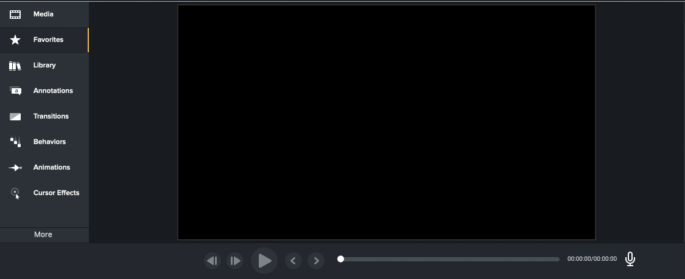

TECHSMITH
PROBLEM
Regular users of Camtasia need to quickly and efficiently find tools that would be useful to them so they can spend less time on the video editing process.
FIRST STEPS
We first did research on camtasia by looking at other case studies that were done about camtasia. Also we downloaded camtasia and played with the design and editing software. We also did a survey for another research method and met with the client to get feedback on are progress.
SURVEY RESULTS
What do you use Camtasia for? Videos showing how to do things; home movies with effectsHow to videos, Personal creative projects, GIFs of UI, Bug reports
PROS: Forums are helpful; Relatively easy to pick up and start using; Creates a professional looking video
CONS: Audio editing is not great; Sometimes difficult to find information about niche features; Feels 'slow', too complicated, have to search for anything outside of redo and clip
REDESIGNS
Link Tutorial
We added a play button to each of the features that are provided in the Media section that leads to a tutorial video on how to use these features. To create less of a cluster in this area, we linked the tutorial video within the play icon
Scroll Feature vs “More Button”
Why Scrolling: Comfortable and Intuitive type of navigation. Keeps the user in the flow of work. More efficient and less load time
Why Not Button: Button act as a distraction. Takes too long to load content when clicking on the button.
Display Voice Narration
⅓ survey responder uses Imovie; Easily Accessible; Takes unnecessary space in the toolkit
Adding Media
We switched the “+” sign that was previously in the bottom left with the “sort by..” buttons that were in the top right corner.
OUTCOME
At the start of the project we wanted to see the pros and cons of Camtasia. Some of the pros were that it was made things much easier to use, it was faster and a lot more organized with the templates which helps find things better. As for cons, the main things that kept coming up was how frustrating the editing was. It would mess up the colors when an edit was done or if someone tried to export their work it never looked like how they wanted it to. With our ideas of these possible features to be added to Camtasia, we think it would really help benefit those who struggle with editing their works.